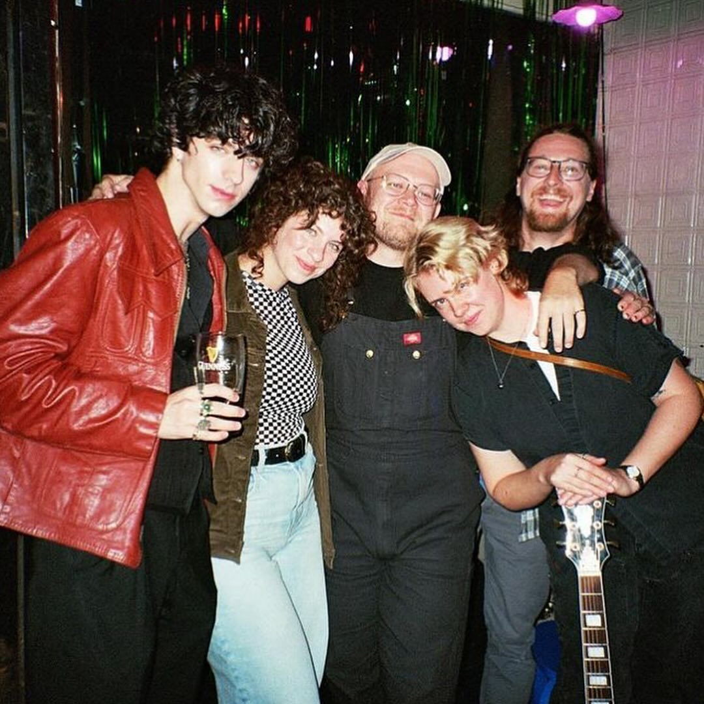
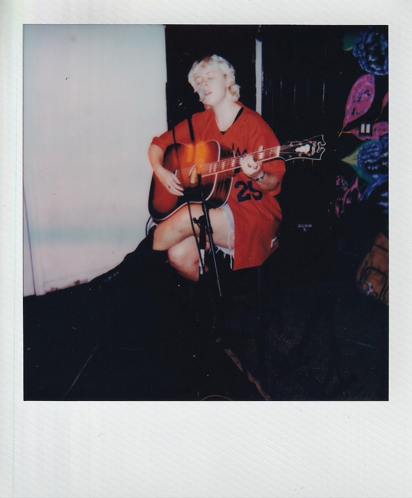

Volena

Professional Bio
Singer-songwriter Maddie Grandusky-Howe (they/them) began writing songs to simultaneously process past trauma and document their queer, gender-fluid coming of age. Their lyrical and emotional range has culminated in Volena, joined by guitarists Billy Gartrell (he/him) and Laura Supnik (she/her), bassist Ross Langdon Page (he/him), and drummer John Supnik (he/him).
Although the band is newly formed, its members have made their mark in various music communities across the United States—playing in Rochester, New York; Asheville, North Carolina; and Lancaster, Pennsylvania, with Brooklyn, New York uniting them in 2023.
Influenced by artists like Angel Olsen, Big Thief, Rilo Kiley, and Haley Heynderickx, Volena explores the internal and external conflict between emotion and reaction. The songs serve as both a prayer and a means of processing: a magnifying glass on love and abuse and how the two can coexist.
Personal Bio
Maddie is along time friend of my partner (and Volena bandmate) Laura. They've known eachother since college. I had known that Maddie was into music for some years but had never heard them play. In January of 2020, we celebrated my birthday by throwing a house show in our 1 bedroom apartment in East Williamsburg. We named the living room, for just that night, The Monitor. We had 4 artists play and packed the house. It was the first time that I had heard Maddie sing. It was their song Groceries that gave me that feeling, the one that any music fan knows well, that stops you in your tracks and makes you realize that you're witnessing something special. Fast forward a few years, a global pandemic, lost relationships, etc. and Maddie mentioned to me that they weren't sure if they were doing to play music again. I convinced them to give it another shot. We played haphazardly a few times together over the next months. All of a sudden, Maddie had a wealth of songs written. All of them were powerful and affecting. And shortly after they were attacking this part of their life as a musician that they had never fully explored. Their determination and dedication to their newly-formed band, as well as their obviously incredible musical talent
convinced me that maybe it was time to follow my dreams too. Maybe it was time to press a record.
- BG, November 2025
Photos


